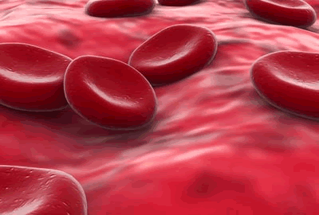
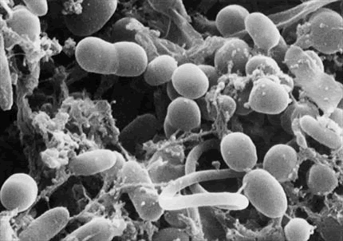
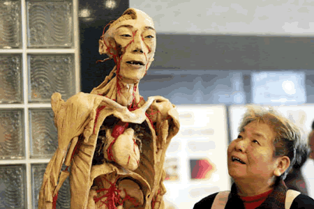
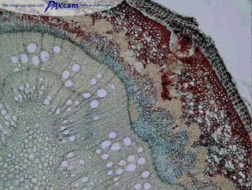

| |
Units and Major Topics |
Links |
|

|
Cellular Biology [Unit outline]
- Life processes are determined by the structures and
functions of biochemical compounds, cell organelles, and body systems.
- Technological devices that support cellular functions and
processes can be used to improve human health.
- Substances that are present in our everyday lives can
affect cellular functions and processes in positive and negative ways.
- POWERPOINT Presentations
|
Cell
structure and motion
Onion
Skin Specimens
FOOD LAB |
|

|
Microbiology [Unit outline]
- Groups of microorganisms have common characteristics, and
these characteristics enable them to interact with other organisms in
the environment
- Microorganisms can have both positive and negative effects
on the environment.
- The technological use of microorganisms raises many ethical
issues.
|
The Tree of Life (Taxonomy)
Viruses
Bacteria
Immune System
Protists and protists
Fungi |
|

|
Anatomy of Mammals [Unit outline]
- Groups of organs with specific structures and functions
work together as systems, which interact with other systems in the body.
- Technologies that are used to maintain human health have
social and economic benefits and costs.
- Environmental factors, including natural factors and those
resulting from human activity, can have a wide range of effects on
human health.
|
Get Body Smart - Anatomy
Introduction to human anatomy
Merck Medical Manual Online |
|

|
Plants In the Natural Environment [Unit outline]
- Plants have specialized structures with distinct functions
that enable them to respond and adapt to their environment.
- Plants are critical to the survival of ecosystems.
- Humans affect the sustainability of ecosystems when they
alter the balance of plants within those ecosystems.
|
Review of basic structure and function
Flashcards covering plant biology
Plant Biology for Kids
Starting point for lots of plant topics |
|
|
Genetics [Unit outline]
- Genetic research and biotechnology have social,
environmental, and ethical implications.
- Variability and diversity of living organisms result from
the distribution of genetic materials during the process of meiosis.
|
DNA
from the beginning a website that is very interactive and discusses original
experiments and how ethics are playing a major role in the development of genetic
engineering. Go to section 7 and 8 to explore Mitosis and Meiosis.
The
Biology Project provides animation, notes and a quiz to check if you can
understand Mitosis and Meiosis. This is a higher level website that covers
additional information.
- Mitosis
versus Meiosis a slide show about the different phases of mitosis and
meiosis
-
- Genetic
Science Learning Center Helping people understand how genetics affects
their lives and society
-
- Dr
Chromo's school: DNA structure a higher level of information dealing with
topic ranging from cell components, mitosis and meiosis, DNA and RNA roles
in the cell
-
- The
Structure of the DNA Molecule and a summary of the classic research that
lead to the discovery of the DNA molecule.
|
|
|
|
|